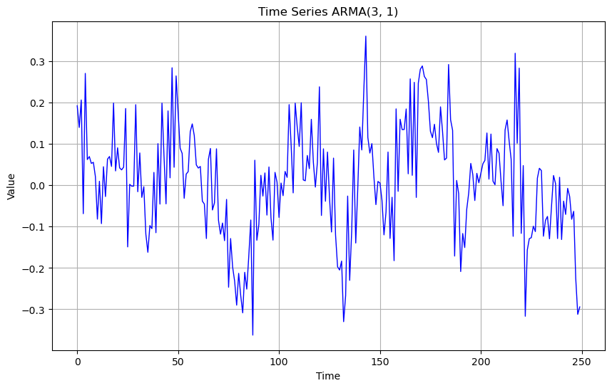
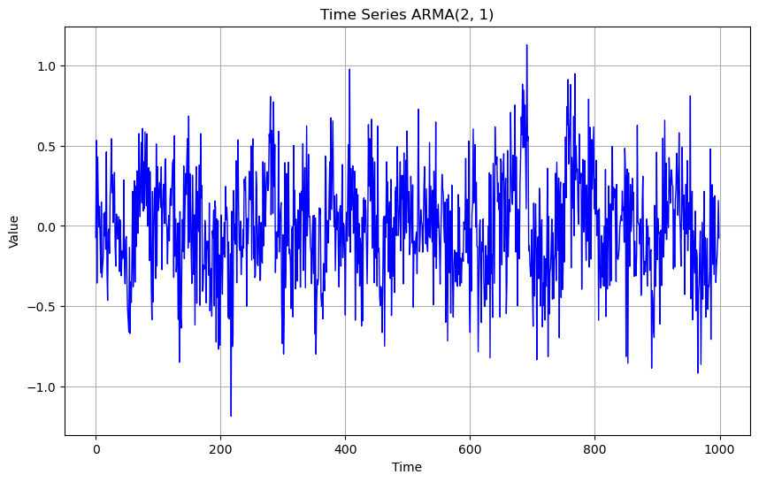
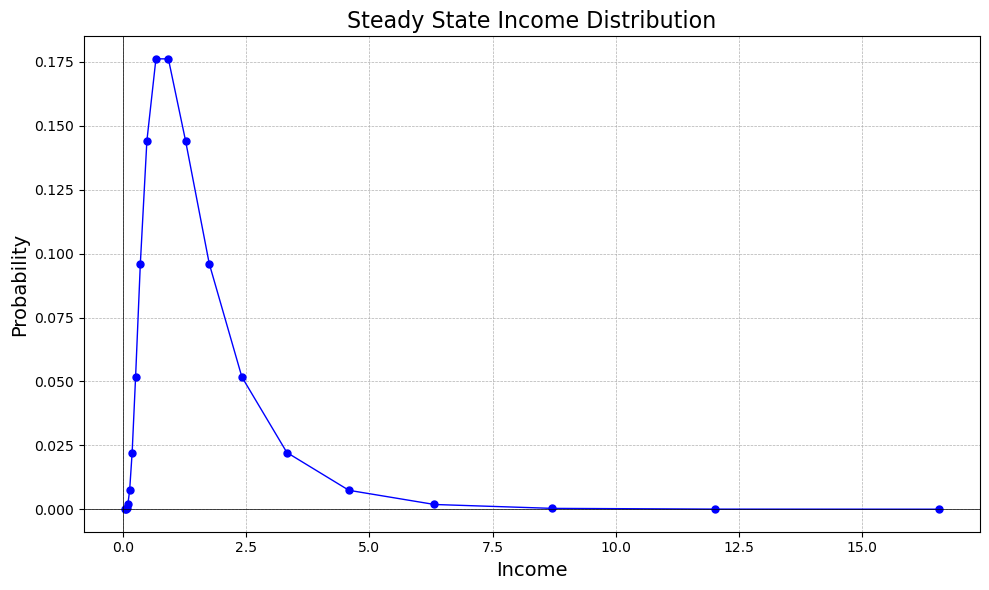

Application: Stochastic Processes#
In this notebook we put some of the techniques we just learned to good use. We will: - write a function to simulate ARMA(p,q) processes - write a function to simulate Markov-processes - Introduce the Rouwenhorst method to approximate an AR(1) process using a Markov process on a finite grid.
Additionally, we write our own class markov with simulation and calibration methods.
ARMA(p,q)#
Recall the definition of an ARMA(p,q) process as $$ y_t = \alpha_0 + \sum_{j = 1}^p \alpha_j L^j y_t + \sum_{j = 1}^q \beta_j L^j \varepsilon_t + \varepsilon_t$$ where L is the lag-operator and \varepsilon_t\sim_{i.i.d.} \Phi(\sigma, 0) (we assume a normal distribution on the errors).
Let’s write a function which takes in a dictionary holding \alpha_0, \underline{\alpha}, \underline{\beta} and \sigma to simulate the corresponding ARMA process.
import numpy as np
from numba import prange, jit
arma_dict = {
'alpha_0': 0.,
'alpha': np.array([0.2, 0.4, 0.1]),
'beta': np.array([0.1]),
'sigma': 1
}
def sim_arma(arma_dict, T):
p = len(arma_dict['alpha'])
q = len(arma_dict['beta'])
alpha = np.flip(arma_dict['alpha']) # reverse the vectors to make sure a_j is multiplied to y_t-j in np.vdot
beta = np.flip(arma_dict['beta'])
y = np.empty(1000+T) # 1000 burn-in draws
eps = np.random.normal(0., arma_dict['sigma'], T+1000)
y[0:max(p,q)] = eps[0:max(p,q)]
for i in np.arange(max(p,q), T+1000):
y[i] = np.vdot(y[i-(p):(i)], alpha) + np.vdot(eps[i-(q):(i)], beta)
return y[-T:]
arma_ts = sim_arma(arma_dict, 250)
Let’s write a function to plot the time series.
import matplotlib.pyplot as plt
def plot_time_series(time_series, arma_dict, xlabel='Time', ylabel='Value'):
"""
Plots the given time series.
Parameters:
time_series (array-like): The time series data to plot.
title (str): The title of the plot.
xlabel (str): The label for the x-axis.
ylabel (str): The label for the y-axis.
"""
title='Time Series ARMA(' + str(len(arma_dict['alpha'])) + ", " + str(len(arma_dict['beta'])) + ")"
plt.figure(figsize=(10, 6))
plt.plot(time_series, color='blue', linestyle='-', linewidth=1.)
plt.title(title)
plt.xlabel(xlabel)
plt.ylabel(ylabel)
plt.grid(True)
plt.show()
# Plot the time series
plot_time_series(arma_ts, arma_dict)

Recall now that a given ARMA(p,q) is stationary if and only if all roots of the characteristic polynomial on the AR-part,
$$ 1 - L^1 \alpha_1 - … - L^q \alpha_q $$
are outside the (complex) unit circle. We write a function to check this. To do so, we use np.roots(p), which return the roots of a polynomial with coefficients given in p.
def is_stable(alpha):
coefs = np.concatenate([[1], -alpha])[::-1] # [::-1] reverses an array
print("The lag polynomial to check is:")
print("1 -", " - ".join([f"{a}*L^{i}" for i, a in enumerate(alpha)]))
print("The roots are:")
roots = np.roots(coefs)
for root in roots:
print(f" {root:.2f}")
# Check if all roots have modulus > 1
are_roots_outside_unit_circle = np.all(np.abs(roots) > 1)
if are_roots_outside_unit_circle :
print("\nThe process is stable.")
else :
print("\nThe process is unstable.")
return are_roots_outside_unit_circle
Let’s try it!
is_stable(arma_dict['alpha'])
The lag polynomial to check is:
1 - 0.2*L^0 - 0.4*L^1 - 0.1*L^2
The roots are:
-2.60+1.23j
-2.60-1.23j
1.21+0.00j
The process is stable.
True
A Taster of OOP#
In Python, classes are a fundamental building block of object-oriented programming (OOP). A class is a blueprint for creating objects (instances), which can have attributes (variables) and methods (functions) associated with them.
Basic Structure of a Class
Here’s a simple example to demonstrate the structure of a class in Python:
class Dog:
# Class attribute (shared by all instances)
species = "Canis familiaris"
# The initializer method (also called the constructor)
def __init__(self, name, age):
# Instance attributes
self.name = name
self.age = age
# Instance method
def bark(self):
return f"{self.name} says woof!"
# Another instance method
def get_human_years(self):
return self.age * 7
# Creating instances (objects) of the class
dog1 = Dog("Buddy", 5)
dog2 = Dog("Lucy", 3)
# Accessing attributes and methods
print(dog1.name) # Output: Buddy
print(dog1.bark()) # Output: Buddy says woof!
print(dog2.get_human_years()) # Output: 21
Buddy
Buddy says woof!
21
Key Concepts:
-
Class Definition:
- A class is defined using the
classkeyword followed by the class name and a colon. - By convention, class names are written in CamelCase (e.g.,
Dog).
- A class is defined using the
-
Attributes:
- Class Attributes: These are shared across all instances of the class. In the example,
speciesis a class attribute. - Instance Attributes: These are specific to each instance of the class. They are defined inside the
__init__method (constructor). In the example,nameandageare instance attributes.
- Class Attributes: These are shared across all instances of the class. In the example,
-
Methods:
- Methods are functions defined within a class that operate on instances of the class.
- Instance Methods: These take
selfas the first parameter, which refers to the instance calling the method. For example,barkandget_human_yearsare instance methods in theDogclass. - The
__init__method is a special method called automatically when a new instance of the class is created. It is used to initialize the instance’s attributes.
-
Creating Objects:
- Objects (instances) are created by calling the class as if it were a function, passing any arguments required by the
__init__method. - For example,
dog1 = Dog("Buddy", 5)creates an instance of theDogclass withnameas"Buddy"andageas5.
- Objects (instances) are created by calling the class as if it were a function, passing any arguments required by the
-
Accessing Attributes and Methods:
- Instance attributes and methods are accessed using dot notation (e.g.,
dog1.name,dog1.bark()). - Class attributes can be accessed directly via the class name or through any instance (e.g.,
Dog.speciesordog1.species).
- Instance attributes and methods are accessed using dot notation (e.g.,
After we got the basic stuff out of the way, let’s write a class for ARMA(p, q) processes. We call the class arma and have the following desiderata:
- The class is initialized with the four inputs making up
arma_dict - It has a method allowing to simulate a the process with the process parameters
- we can update the process parameters whenever we like
- we can check whether the ARMA process is stable.
Let’s get to it.
class ARMA:
def __init__(self, alpha_0, alpha, beta, sigma):
self.alpha_0 = alpha_0
self.alpha = alpha
self.beta = beta
self.sigma = sigma
self.arma_dict = {
'alpha_0': self.alpha_0,
'alpha': self.alpha,
'beta': self.beta,
'sigma': self.sigma
}
# Methods to update the parameters help in this class
def set_alpha_0(self, alpha_0):
self.alpha_0 = alpha_0
self.arma_dict['alpha_0'] = alpha_0
def set_alpha(self, alpha):
self.alpha = alpha
self.arma_dict['alpha'] = alpha
def set_beta(self, beta):
self.beta = beta
self.arma_dict['beta'] = beta
def set_sigma(self, sigma):
self.sigma = sigma
self.arma_dict['sigma'] = sigma
# the simulation method
def sim_arma(self, T):
p = len(self.alpha)
q = len(self.beta)
alpha = self.alpha
beta = self.beta
y = np.empty(1000+T) # 1000 burn-in draws
eps = np.random.normal(0, arma_dict['sigma'], T+1000)
y[0:max(p,q)] = eps[0:max(p,q)]
for i in np.arange(max(p,q)+1, T+1000):
y[i] = np.vdot(y[i-(p+1):(i-1)], alpha) + np.vdot(eps[i-(q+1):(i-1)], beta)
return y[-T:]
# checking for stability
def is_stable(self):
print(self.alpha)
coefs = np.concatenate([[1], - self.alpha])[::-1] # [::-1] reverses an array
print("-"*70)
print("The lag polynomial to check is:")
print("1 -", " - ".join([f"{a}*L^{i+1}" for i, a in enumerate(self.alpha)]))
print("\nThe roots are:")
roots = np.roots(coefs)
for root in roots:
print(f" {root:.2f}")
# Check if all roots have modulus > 1
are_roots_outside_unit_circle = all(np.abs(roots) > 1)
if are_roots_outside_unit_circle :
print("\nThe process is stable.")
else :
print("\nThe process is unstable.")
print("-"*70)
return are_roots_outside_unit_circle
# initialize myarma object
myarma = ARMA(0, np.array([0.3,0.3]), np.array([0.3]), 1)
# run and plot a little simulation
plot_time_series(myarma.sim_arma(1000), myarma.arma_dict)
myarma.is_stable()
# change the coefficient vector on AR-part
myarma.set_alpha(np.array([3, 1]))
myarma.is_stable()

[0.3 0.3]
----------------------------------------------------------------------
The lag polynomial to check is:
1 - 0.3*L^1 - 0.3*L^2
The roots are:
-2.39
1.39
The process is stable.
----------------------------------------------------------------------
[3 1]
----------------------------------------------------------------------
The lag polynomial to check is:
1 - 3*L^1 - 1*L^2
The roots are:
-3.30
0.30
The process is unstable.
----------------------------------------------------------------------
False
Markov Processes#
Introduction to Discrete Markov Processes#
A Discrete Markov Process (or Markov Chain) is a mathematical model describing a system that transitions between a finite or countable number of states in discrete time steps. The key feature of a Markov process is the Markov Property, which states that the future state depends only on the current state and not on the sequence of events that preceded it.
Key Definitions:#
-
State Space (S): The set of all possible states the system can be in. It can be finite or countably infinite.
-
Time Parameter: Discrete, often represented as t = 0, 1, 2, \ldots.
-
Transition Probability:
- Denoted as P_{ij}, it represents the probability of transitioning from state i to state j in one time step.
- Mathematically: P_{ij} = P(X_{t+1} = j \mid X_t = i), where X_t is the state at time t.
- Collect these in a matrix, \Pi
- The sum of probabilities in each row equals 1: \sum_{j} P_{ij} = 1 for all i.
-
Initial Distribution (\pi^{(0)}):
- A probability distribution over the state space at time t = 0.
-
n-Step Transition Probability:
- The probability of transitioning from state i to state j in n steps, denoted as \Pi_{ij}^{(n)}.
- Calculated by raising the transition matrix to the n^{th} power: (\Pi^{(n)})' = (\Pi')^n.
-
Stationary Distribution (\pi):
- A probability distribution over states that remains unchanged as the process evolves.
- Satisfies \pi = \Pi' \pi.
- Represents the long-term behavior of the Markov process if it exists and is unique.
Given a distribution \pi_t, the next period distribution will be \pi_{t+1} = \Pi' \pi_t
# transition matrix
Pi = np.array([
[0.2, 0.4, 0.4],
[0.1, 0.5, 0.4],
[0.8, 0.1, 0.1]
])
# current distribution
pi = np.array([0.5, 0.5, 0])
pi = pi[:, np.newaxis]
# next period distribution
Pi.transpose() @ pi
array([[0.15],
[0.45],
[0.4 ]])
Exercise: Write a function that checks whether a given matrix is a Markov matrix.
- do the columns in a given row sum to 1?
- are all entries between 0 and 1?
- is it a square matrix?
Then, write a function which takes a Markov transition matrix and calculates the stationary distribution. (Hint: \Pi^N converges to a matrix which contains the stationary distribution(s) in its rows.)
# TBD
M = Pi
for i in range(50):
M = Pi @ M
M
array([[0.35042735, 0.34188034, 0.30769231],
[0.35042735, 0.34188034, 0.30769231],
[0.35042735, 0.34188034, 0.30769231]])
Rouwenhorst Method to Approximate an AR(1) Process with a Markov Chain#
Advantages of the Rouwenhorst Method:#
- Flexibility: The Rouwenhorst method is particularly useful for approximating AR(1) processes with high persistence (i.e., when $ \rho $ is close to 1) because it can accommodate the high persistence and the correct distribution properties of the AR(1) process.
- Accuracy: It provides a good approximation with relatively few states (even with a small $ n $), making it computationally efficient.
For an arbitrary Markov process mapping to income states and corresponding income levels $ y $, consider the simplest case:
-
Note that \mathrm{Var}(\log y_t) is the long-run variance as well as the cross sectional variance, which is typically directly estimated. So is \rho, and we infer \alpha.
-
Our goal is to approximate this continuous AR(1) process with n discrete states using the Rouwenhorst Method. This method helps us construct a Markov transition matrix \Pi that closely matches the properties of the AR(1) process.
-
To approximate the AR(1) process, we represent it with n discrete states. Each state is a sum e_t \in \{0,1,..., n-1\} of n-1 underlying hidden binary state variables. Each binary state has a probability p of staying at its current value and a probability 1-p of switching to a different value.
-
The parameter p is set to match the persistence of the AR(1) process, where p = \frac{1+\rho}{2}. The standard deviation of the underlying state e_t is given by \frac{\sqrt{n-1}}{2}. To match the cross-sectional standard deviation of log income, we scale (the grid of) e_t by \frac{\alpha}{\sqrt{1 - \rho^2}} \frac{2}{\sqrt{n-1}} = \sigma_y \frac{2}{\sqrt{n-1}}.
-
Finally, the goal is to find the discretized income process corresponding to these states.
The Markov transition matrix \Pi^n for the states e follows the recursion:
The final transition matrix \Pi^n is equal to \tilde{\Pi}^{n} for the first and last rows, and \tilde{\Pi}^{n}/2 for all other rows. The base case for the recursion is:
This procedure can be implemented in a function rouwenhorst(n, rho, sd_log_y) which returns a transition matrix and a grid for \log y.
Let’s get to it:
# sigma is the sd of the error, e_t
@jit(nopython=True)
def rouwenhorst(n, rho, sd_log_y):
# the grid
e = np.arange(n) # sd of e on this grid with Pi is sqrt(n-1)/2
e = e / ( (n-1)**0.5 /2 ) # now its unit sd
e = e * sd_log_y # now it's the sd of the cross section of log_y
# the transition matrix
p = (1+rho)/2
Pi = np.array([[p, 1-p], [1-p, p]])
while Pi.shape[0] < n:
Pi_next = np.zeros((1+Pi.shape[0], 1+Pi.shape[1]))
Pi_next[0:Pi.shape[0], 0:Pi.shape[1]] += Pi * p
Pi_next[0:Pi.shape[0], -Pi.shape[1]:] += Pi * (1-p)
Pi_next[-Pi.shape[0]:, -Pi.shape[1]:] += Pi * p
Pi_next[-Pi.shape[0]:, 0:Pi.shape[1]] += Pi * (1-p)
Pi_next[1:-1, :] /= 2
Pi = Pi_next
return Pi, e
@jit(nopython=True)
def stationary_dist(Pi):
Pi_stationary = Pi.copy()
eps = 1
while eps > 10E-12:
Pi_old = Pi_stationary.copy()
Pi_stationary = Pi_stationary @ Pi_stationary
eps = np.max(np.abs(Pi_stationary - Pi_old))
if np.max(
np.abs(
np.sum(Pi_stationary - Pi_stationary,axis = 0) / Pi_stationary.shape[0]
)
) < 10E-10: # the ugly sum.../ .shape construction is because numpy cant handle np.mean with axis args
print("the steady state is unique.")
return Pi_stationary
def normalize_y(log_y, pi_ss): # make y have unit mean
y = np.exp(log_y)
y = y / np.vdot(y, pi_ss)
return y
# lets test our code
Pi, log_y = rouwenhorst(20, 0.975, 0.7)
pi_ss = stationary_dist(Pi)[0,:]
y_grid = normalize_y(log_y, pi_ss)
# plot income and probability distribution
plt.figure(figsize=(10, 6))
plt.plot(y_grid, pi_ss, marker='o', linestyle='-', color='b', markersize=5, linewidth=1)
plt.title('Steady State Income Distribution', fontsize=16)
plt.xlabel('Income', fontsize=14)
plt.ylabel('Probability', fontsize=14)
plt.grid(True, which='both', linestyle='--', linewidth=0.5)
plt.axhline(0, color='black',linewidth=0.5)
plt.axvline(0, color='black',linewidth=0.5)
plt.tight_layout()
plt.show()
the steady state is unique.
